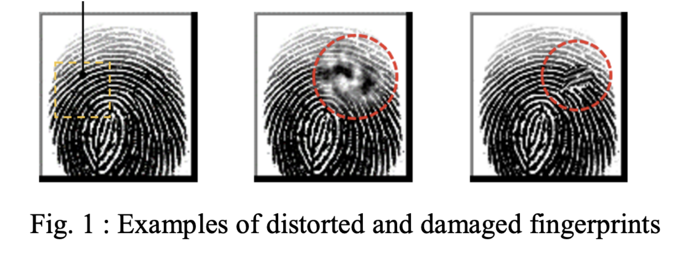
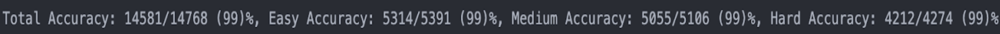

NMAIL Research
Building Deep Learning Models

Building Deep Learning Models
Fingerprint recognition is a technology that can be used in various settings from unlocking phones to criminal investigations. Methods to identify the similarity of a fingerprint image when compared to one in a database already exist; however, the challenge here is to recognize that the two fingerprint images are of the same person even though one may be distorted. The main focus of this project is to develop learning-based algorithms that could identify the same fingerprints even if one were to be distorted or damaged in some sort of way, such as blurred or cut-out images. Specifically, our group developed and connected a UNet and Siamese Neural Network which would reconstruct the distorted fingerprint regions and determine if the same fingerprint is in the database, respectively.
The main objective of this project is to develop two main algorithms: the UNet Neural Network and the Siamese Neural Network. First, the Siamese Neural network would be used to compare the features extracted from images to find the matching cases of the same person. UNet Neural Network would primarily be used to fill in the damaged sections of the fingerprint prior to inputting the image into the Siamese Network. Overall, the ideal result from the project would be able to take in a damaged fingerprint image and correctly output whether or not the fingerprint of the same person is in the database.
In this research report, my primary focus will be on the Siamese Neural Network aspect of the model, whereas the final product of the project also includes a UNet that aims to restore and reconstruct the damaged areas of the fingerprint to facilitate the similarity detection process for the Siamese Neural Network. We compared two types of Siamese Network models: Resnet50 with a BCE Loss function and a Self-designed Convolutional Neural network with a contrastive loss function. The Resnet50 model was trained on all three levels of difficulty – easy, medium, and hard – with the data completely shuffled and randomized among levels of difficulty. The self-designed Convolutional Neural network was first trained on the easy levels, then on the medium levels with the saved weights of the “easy” model, and so on for the hard level, otherwise known as transfer learning.
In recent research on detecting face similarity detection, Siamese Neural Networks were used and have shown promising results. The researchers used a network architecture composed of a series of Convolutional neural networks, fully connected layers, and a Contrastive Loss function to train their model [1]. The architecture is illustrated below:
Similarly, other research conducted by Longsheng Zhu et al. explored the application of three different types of Convolutional Neural Networks including AlexNet, VGG net, and a self-defined Convolutional Neural Network based on the CASIA Fingerprint Dataset [2]. According to the study, the self-defined network outperformed the AlexNet and VGG net with an accuracy of 97% on the testing dataset with the other two achieving a 94% and 51% accuracy, respectively. The researchers learned that tweaking the number of parameters in the Convolutional Neural Networks caused significant changes in the accuracy of the model. The self-defined network had fewer parameters compared to the VGG net but still trained more quickly and accurately. Similar to the above research, Longsheng Zhu et. al used a Contrastive Loss function to train their models with a dynamic adjustment for the threshold to make the model more adaptable to other fingerprint datasets.
In other research, Zihao Li et al. proposed a novel method that “saves the step of feature extraction and can make fingerprint recognition faster and easy to develop” [3]. The proposed method used an embedded Siamese Neural Network along with an image processing algorithm to compare fingerprint images without a need for an offline database. This enables online recognition of fingerprints which makes their method much more compatible with other fingerprint data systems and quicker as it provides a comparison of the fingerprints in real-time.
Finally, Iaroslav Melokhov et al. explored Siamese network features for image matching. In this paper, the researchers created Siamese Neural Networks using the Contrastive Loss function. Similar to our research, this research extracted feature vectors with convolutional neural networks by inputting two images and a label to denote the matching and non-matching cases. Specifically, they used neural network-based feature vectors and measured the similarity using Euclidean distance. The general network architecture is as illustrated below:
Melokhov et al. experimented with three types of Siamese Neural Networks – AlexNet, HybridNet, and sHybridNet – and learned that the sHybridNet outperformed the other networks by more than 10%. In addition, the researchers noted that the “Siamese architecture together with contrastive loss objective is a good choice for learning features for image matching and retrieval tasks” [4].
In order to create these learning-based models – UNet and Siamese Neural Networks – we imported the Deep-Learning Pytorch Library using the Python programming language. We used open datasets Sokoto Coventry Fingerprint Dataset (SOCOFing) to train and test our neural network models. The SOCOFing dataset consists of “6,000 fingerprint images from 600 African subjects… as well as synthetically altered versions with three different levels of alteration for obliteration, central rotation, and z-cut” (Ruiz).
For data preprocessing, we first divided the images into two folders – Real and Altered – where the Real folder contains all 6000 intact fingerprint image files and the Altered folder contains three folders – Altered-Easy, Altered-Medium, Altered-Hard – each containing different variations of distorted/damaged fingerprint images. In addition, transformations were applied on each image to ensure that each fingerprint vector is of the same size when transformed into a tensor.
The two main loss functions we used for the Siamese Neural Network are the Contrastive Loss and Binary Cross Entropy Loss functions. The contrastive loss function calculates the Euclidean distance as the dissimilarity metric to determine whether or not the fingerprints are identical. The contrastive loss is defined by the equation below:
“It takes as input a pair of samples that are either similar or dissimilar, and it brings similar samples closer and dissimilar samples far apart” (baeldung).
The Binary Cross Entropy loss function is defined by the equation below:
By taking the log of the probabilities, the loss becomes really large in order to penalize wrong predictions by the model.
The two main network architectures used for the SNN are the Resnet50 and a self-defined convolutional neural network. For the training process, we trained the two network structures with different approaches. The Resnet50 model was trained randomly on all three levels of difficulty; therefore we created a train-test split that would randomly assign around 70% of the SOCOFing dataset to the training set and around 30% to the testing set. On the other hand, the self-defined convolutional network was trained using transfer learning. The first phase of training used the altered-easy dataset for training, then the altered-medium, and finally the altered-hard datasets with the weights and biases saved at each phase. In both methods, a pair of images and a label would be inputted to create combinations of positive and negative samples.
The following images show a pair of fingerprints with the Euclidean distance calculating the level of dissimilarity to help visualize the results of the model. In the two models – Resnet50 and self-constructed CNN – we used a threshold of 0.5 and 0.8 respectively to determine whether or not the two fingerprints were identical.
First, the model with the Resnet50 architecture, Binary Cross Entropy Loss function, and Adadelta optimizer yielded a 99% accuracy overall and all along the three levels of difficulty. The model was trained on 6 epochs with a 1.0 learning rate and batch size of 128.
Similarly, the model with the self-constructed convolutional neural network, Contrastive Loss function, and Adam optimizer yielded an accuracy of 98.5% overall with the easy, medium, and hard levels individually yielding an accuracy of 98.17%, 98.99%, and 98.33% respectively. The model was trained on 20 epochs of training with altered-easy data, then another 20 epochs of training with altered-medium data, and finally 20 epochs of training with altered-hard data.
Although the distribution of the accuracy across all levels seems pretty balanced, previous attempts showed that with fewer epochs of training the accuracies decrease as the level of difficulty increases. For example, the model that was trained for 5 epochs on each level of difficulty yielded an overall accuracy of 86%, while individually the easy tests yielded an 88% accuracy, medium an 86% accuracy, and hard an 84% accuracy.
In conclusion, this research aimed to create two algorithms: a UNet for restoring damaged fingerprints and a Siamese Neural Network for comparing two fingerprints and detecting similarities. The Resnet50 model with BCE Loss proved to be a quicker and more accurate model than the self-defined Convolutional Neural network. In addition, the more epochs that the model had been trained on the more accurate the results and less differences in accuracy amongst the three levels of difficulty when testing.
The results suggest that by adding the UNet to restore damaged parts of the fingerprint, the performance of the model can be optimized as it usually detects similarity better with easier cases than harder ones. Furthermore, to improve the performance of the Siamese Neural Network, it would be beneficial to try implementing more state-of-the-art techniques such as Vision Transformers for more efficient models that can detect similarity. All in all, the combination of the two networks proved to yield promising results for intelligent fingerprint recognition of approximately 99% accuracy.
[1] Stefanovic, Strahinja. “# 019 Siamese Network in Pytorch with Application to Face Similarity - Master Data Science 07.11.2021.” Master Data Science, 14 Nov. 2021, datahacker.rs/019-siamese-network-in-pytorch-with-application-to-face-similarity/.
[2] Siamese Network Based on CNN for Fingerprint Recognition | IEEE ..., ieeexplore.ieee.org/document/9574487/. Accessed 2 Aug. 2023.
[3] Li, Zihao, et al. “A Novel Fingerprint Recognition Method Based on a Siamese Neural Network.” De Gruyter, 1 Jan. 2022, www.degruyter.com/document/doi/10.1515/jisys-2022-0055/html?lang=en.
[4] I. Melekhov, J. Kannala and E. Rahtu, "Siamese network features for image matching," 2016 23rd International Conference on Pattern Recognition (ICPR), Cancun, Mexico, 2016, pp. 378-383, doi: 10.1109/ICPR.2016.7899663.
[5] 3Blue1Brown. Oct 17, 2017. Gradient descent, how neural networks learn | Chapter 2, Deep learning [Video]. https://www.youtube.com/watch?v=IHZwWFHWa-w&t=579s.
[6] 3Blue1Brown. Nov 3, 2017. Backpropagation calculus | Chapter 4, Deep learning [Video]. https://www.youtube.com/watch?v=tIeHLnjs5U8.
[7] Li, Zihao, et al. “A Novel Fingerprint Recognition Method Based on a Siamese Neural Network.” De Gruyter, 1 Jan. 2022, www.degruyter.com/document/doi/10.1515/jisys-2022-0055/html?lang=en.
[8] Antoniadis, Written by: Panagiotis. “An Introduction to Contrastive Learning.” Baeldung on Computer Science, 10 June 2023, www.baeldung.com/cs/contrastive-learning#:~:text=Contrastive%20Loss,and%20dissimilar%20samples%20far%20apart.